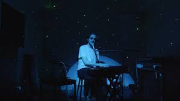

Robert Pickering "Bo" Burnham (born 1990) is an American comedian, musician, and filmmaker. His work often combines elements of musical, sketch, and stand-up comedy with filmmaking. His comedy special Inside (2021) and the coming-of-age film Eighth Grade (2018) have received critical acclaim.His special, Inside, was released on Netflix in 2021 and received widespread acclaim; it was nominated in six categories at the 73rd Emmy Awards, winning three: Outstanding Directing for a Variety Special, Outstanding Music Direction, and Outstanding Writing for a Variety Special. Inside was also nominated for 2 awards at the 64th Grammy Awards for Best Music Film and Best Song Written for Visual Media, winning the latter. Three songs from the special ("Bezos I", "All Eyes on Me", and "Welcome to the Internet") appeared on the Billboard charts and were certified gold in the United States, as was the accompanying album, Inside (The Songs).
Burnham's music and performances tackle such subjects as class, race, gender, human sexuality, sex, and religion. Burnham describes his on-stage persona as a "more arrogant, stuck-up version [of] himself".When speaking with The Detroit News about his rapping, he expressed his intent to honor and respect the perspective and culture of hip-hop music. Burnham recorded a performance in London for Comedy Central's The World Stands Up in January 2008 (aired June 30), making him the youngest person to do so at the age of 17,and signed a four-record deal with Comedy Central Records. Comedy Central Records released Burnham's first EP, the six-song Bo fo Sho, as an online release-only album on June 17, 2008. Burnham's first full album, the self-titled Bo Burnham, was released on March 10, 2009.